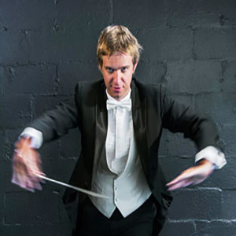

Mario Dobernig (Conductor)
 Mario Dobernig is Conductor in Chief and Artistic Director for the Art of Sound Orchestra, Preston Symphony Orchestra, Victoria Chorale, the Ballarat Wind Orchestra and the Artistic Director of the highly successful Whitley College Music Festival Series.
Career highlights include assistant conductor to Sir Andrew Davis and the Melbourne Symphony Orchestra for the Percy Grainger Project, which was also released on disc for CHANDOS, the Woodend Winter Arts Festival critically acclaimed production of Stravinsky’s Histoire du Soldat and a studio recording for ABC Classics commemorating the centenary of Gallipoli in 2015.
Mario received his PhD at the University of Melbourne in 2014 and also holds Master degrees in Conducting, Percussion and Musicology from the Sibelius Academy in Helsinki, University of Helsinki and the Kunstuniversität Graz, Austria. Mario has been a guest lecturer and conductor at The University of Melbourne and Monash University.
Mario’s large repertoire of orchestral works include Mussorgsky’s Pictures at an Exhibition, Beethoven’s Emperor Concerto, Dvorak’s New World Symphony, Beethoven’ Symphony No. 1, Schumann’s Symphony No. 1, Schubert’s “Great”, Tchaikovsky’s Piano Concerto No. 1, Carl Vine’s Percussion Symphony, Debussy’s L’apres midi d’une faune, Orff’s Carmina Burana, Mahler’s Symphony No. 1. Mario has also been artistic director/conductor and tour manager of several highly successful international tours of Austria and China.
Engagements for the 2015/16/17 seasons include performances of Haydn’s Farewell Symphony and and Operatic Gala in Austria, Mozart’s C-minor Mass, Mozart’s Requiem, Schubert’s Symphony No 5, Haydn’s Creation in Melbourne, de Falla’s El Amor brujo, Schubert’s Mass No 2. and No. 6, Bach’s Christmas Oratorio, Dvorak’s Cello Concerto, Beethoven’s Eroica, Symphony No. 5, No. 7 and Violin Concerto, Faure’s Requiem, Leoncavallo’s Pagliacci for the National Touring Opera, crossover projects with Australian and international EDM DJs and returns to Europe for Prokofiev’s ‘Peter and the Wolf’ and Beethoven’s Symphony No. 5.